메인
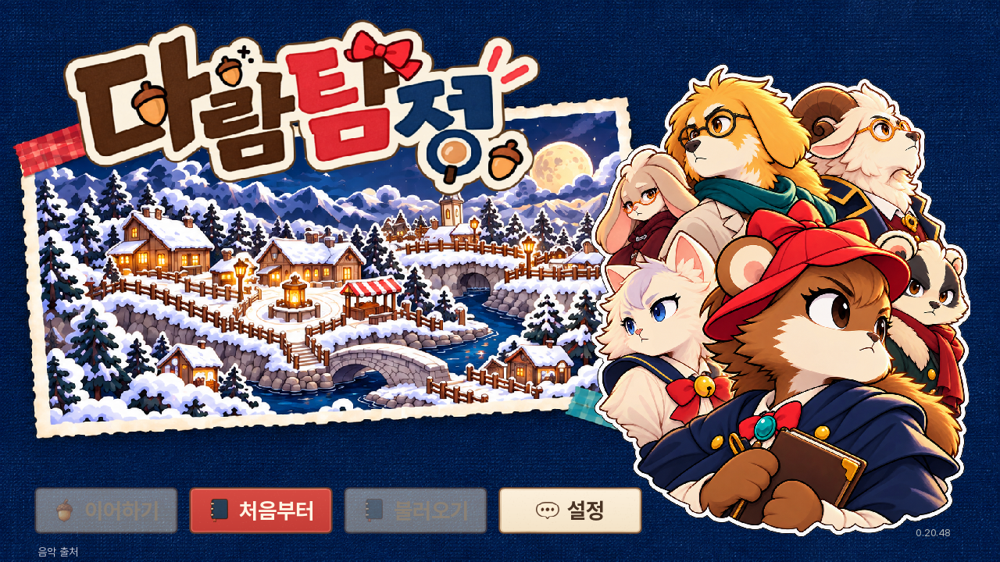
실제 게임 캡처 · 0.20.48 · 로컬 UI 수정 포함 · 2026-10-25T09:26:28.479009+00:00
격리된 실제 게임 렌더입니다. QA 진행 상태/질문·선택 예시 문구를 사용하며 자연 플레이 검증은 아닙니다. 공개 게임과 로컬 변경 여부를 확인하세요.
다른 채팅용 화면 목록 JSON · 버전/해시/직접 이미지 주소
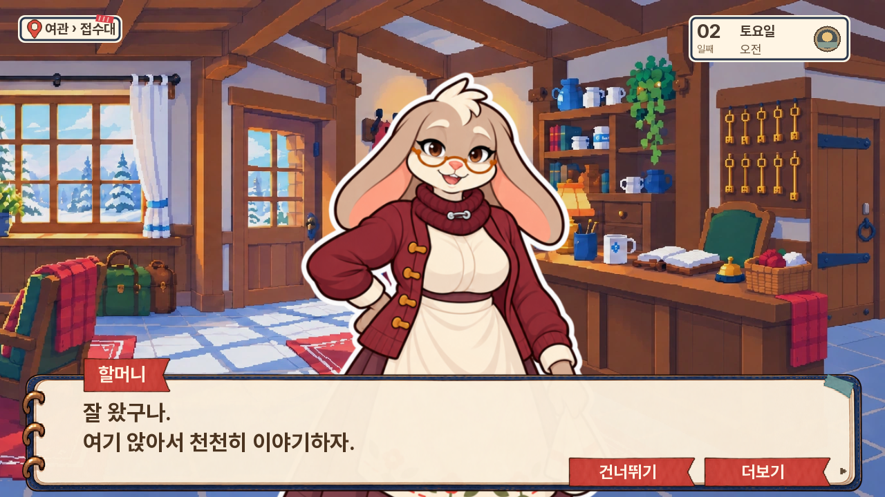
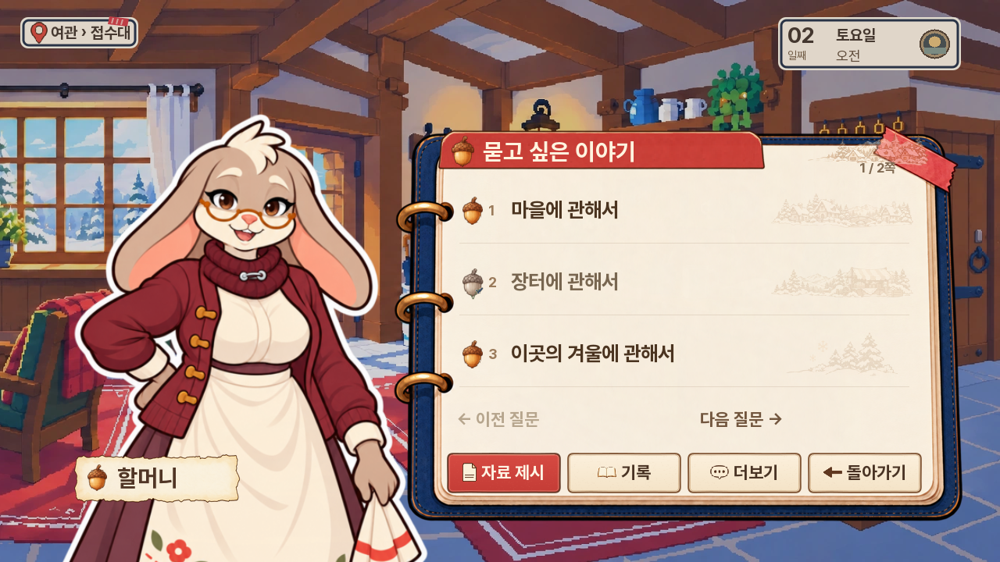
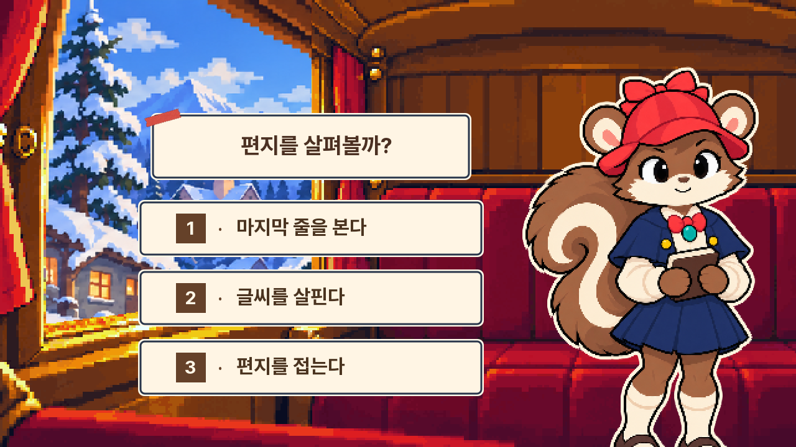
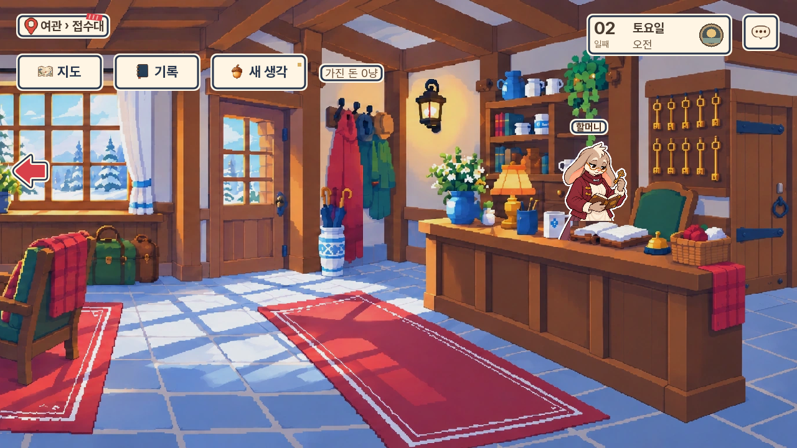

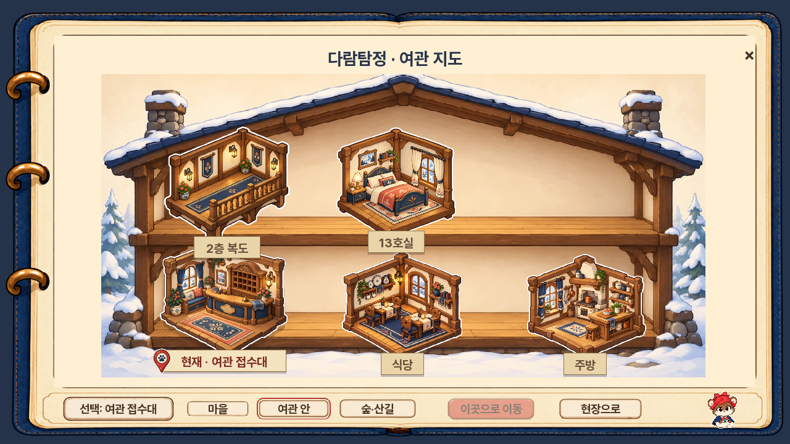
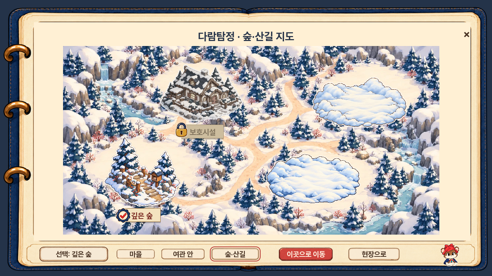
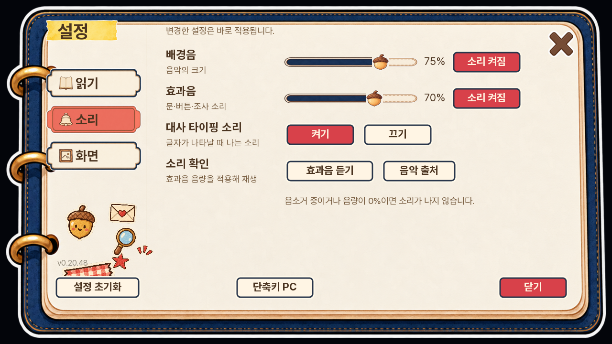
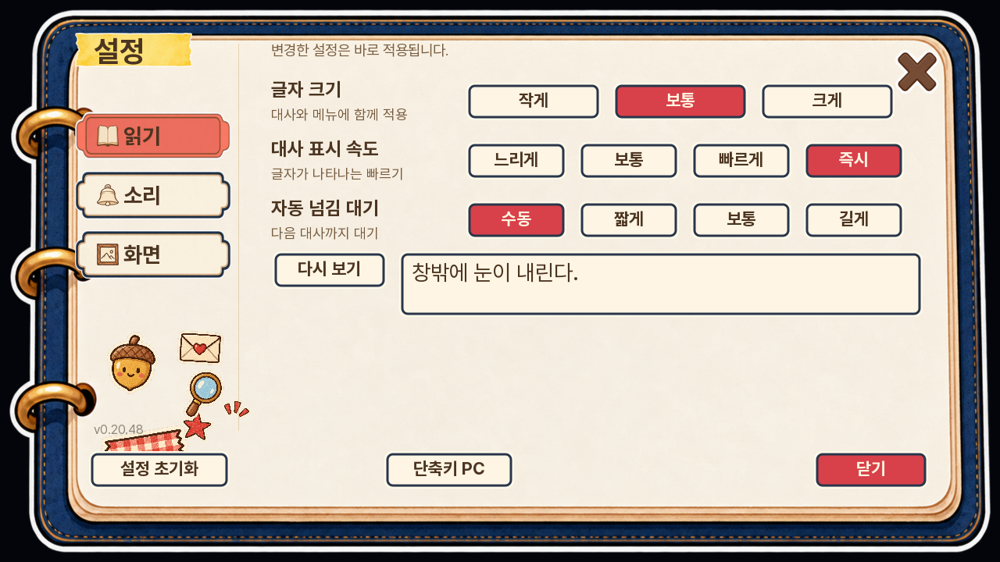
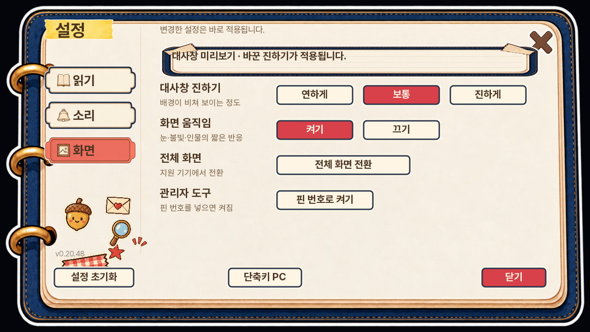
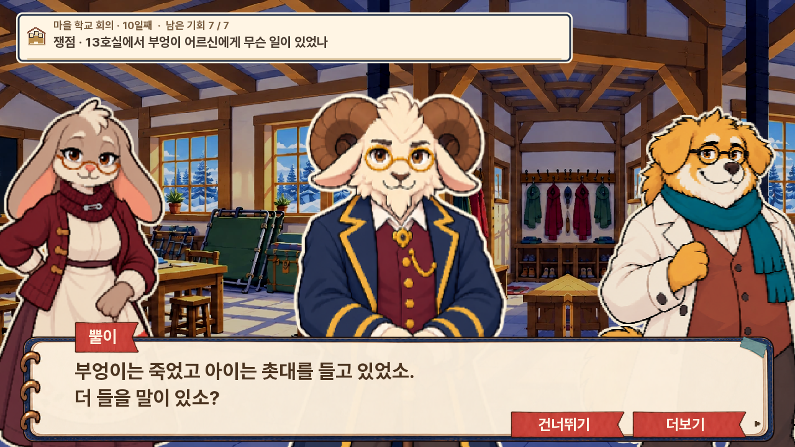
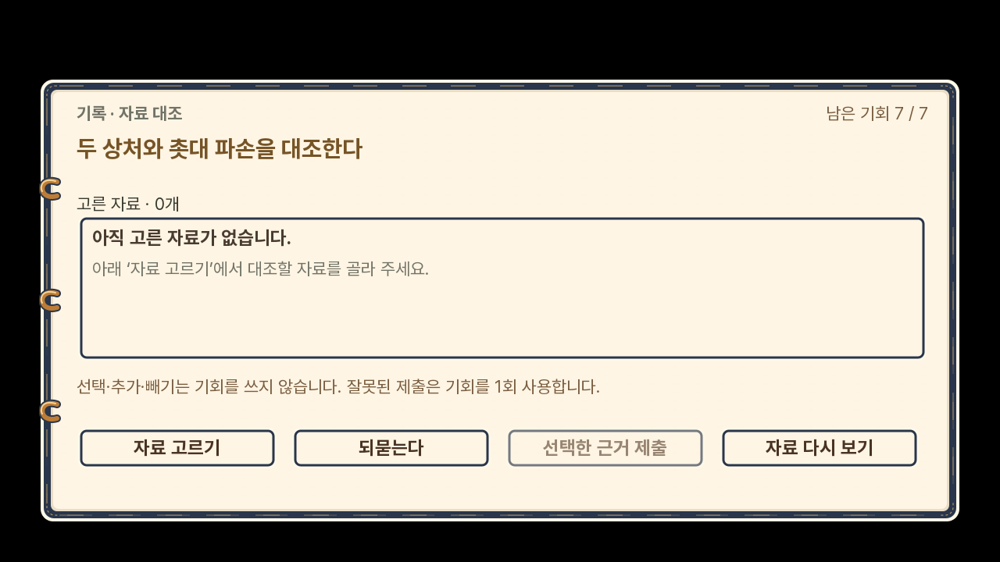
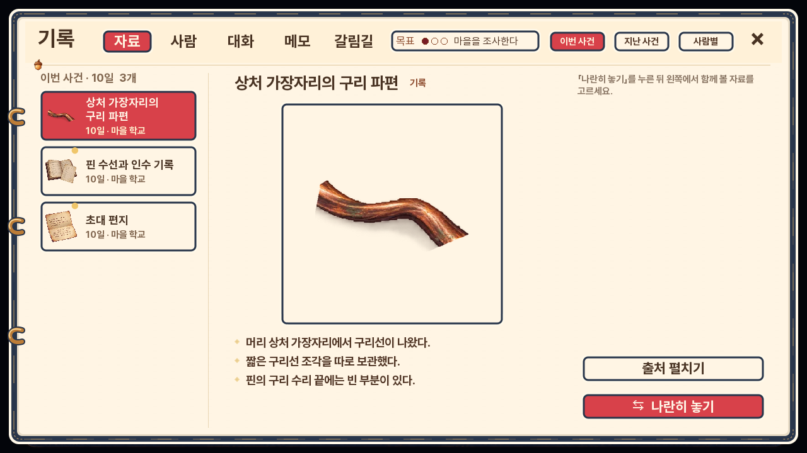
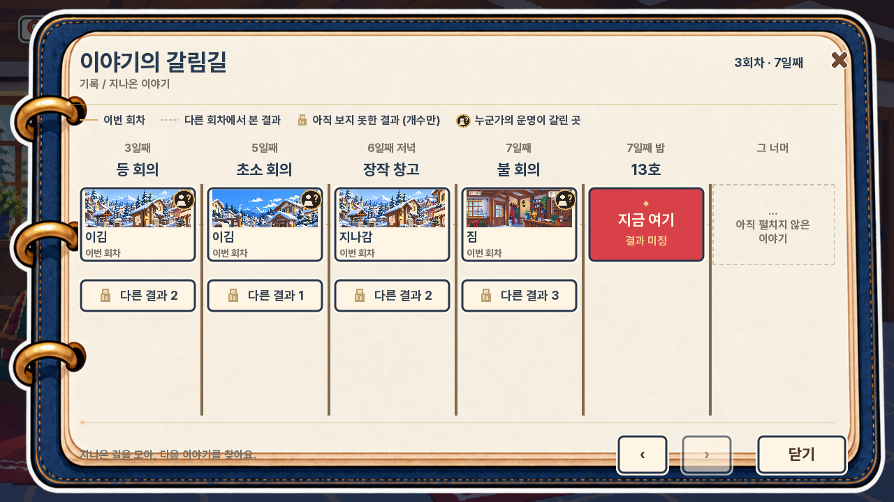